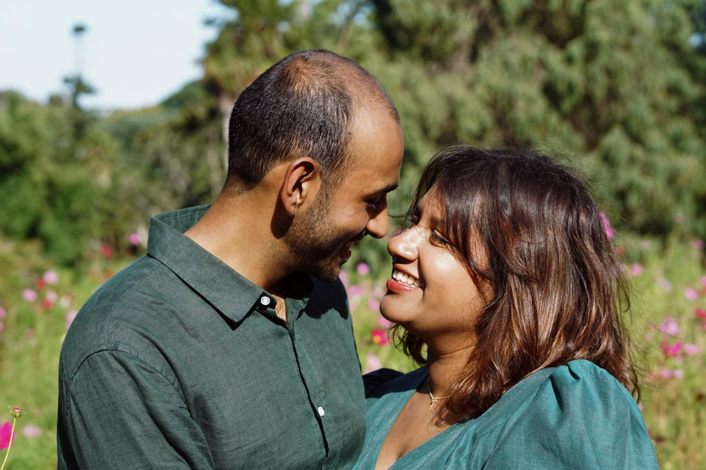
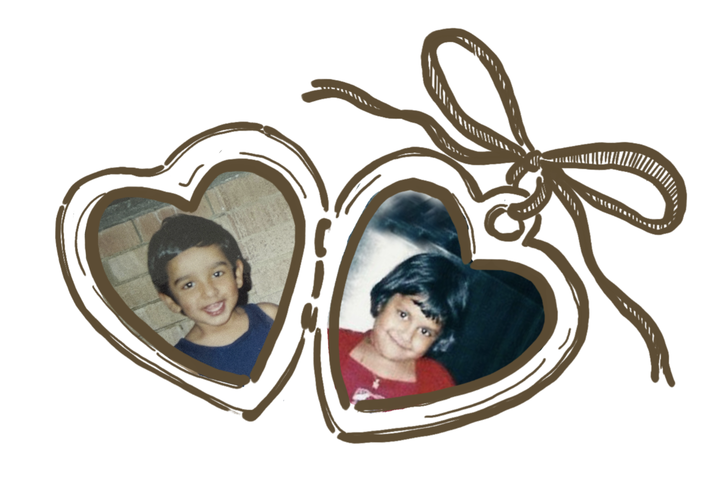
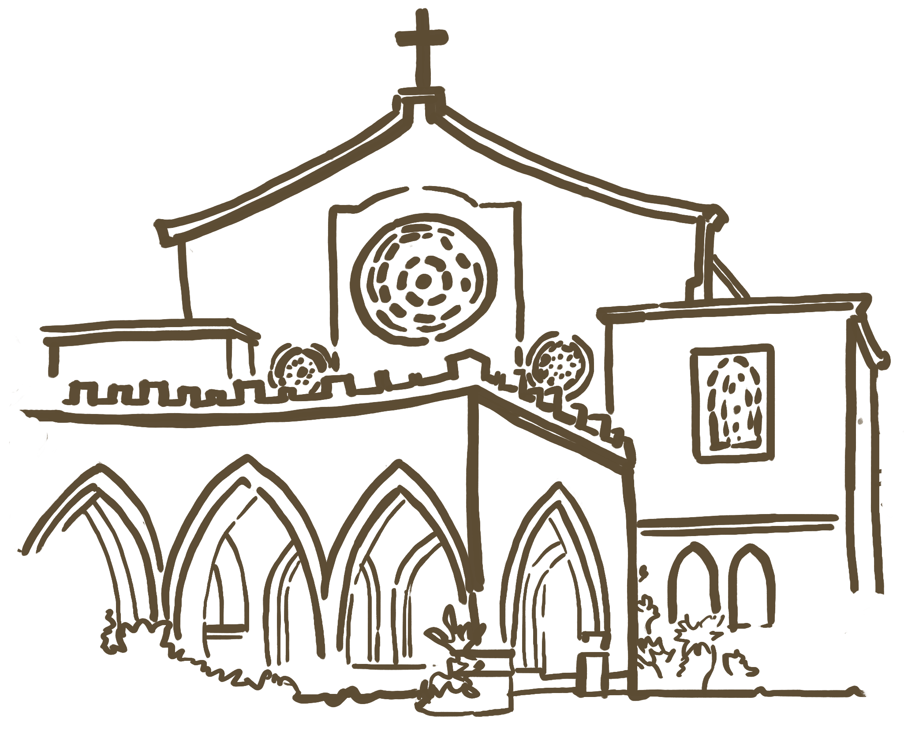
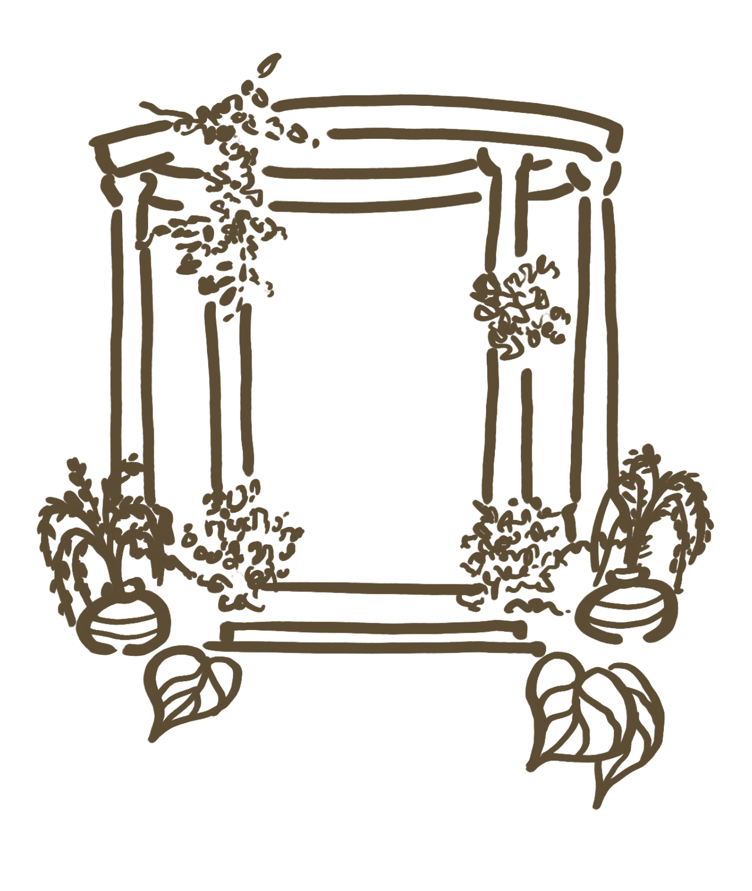
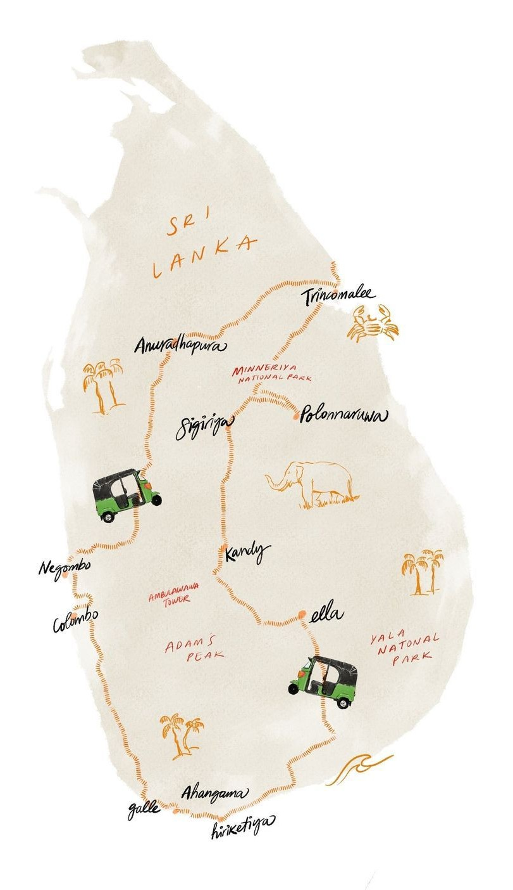
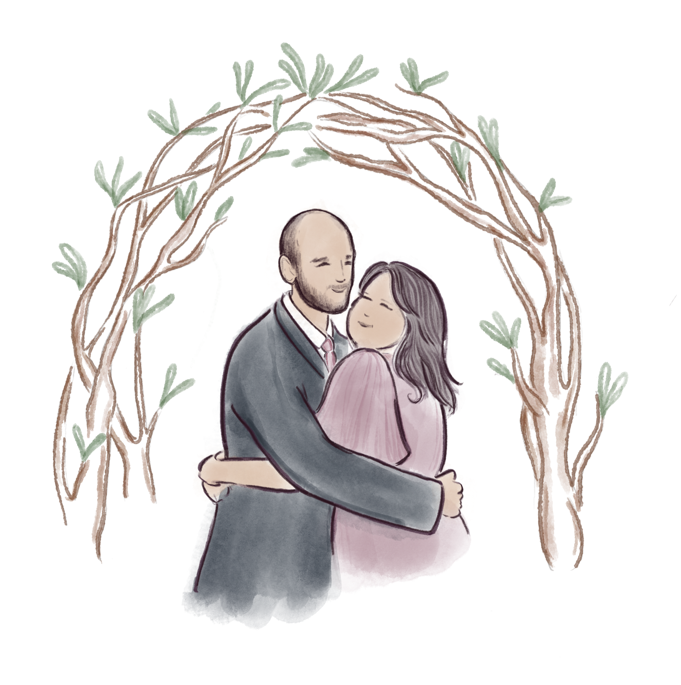

3:00 PM
Church Service
St Theresa's Church, Thimbirigasyaya


How it all began ❤️
Ours is a modern day love story, the kind that begins unexpectedly
and quickly feels like it was always meant to be.
We met in the most ordinary way, but from the very first date in Surry Hills, nothing felt ordinary at all.
We sat and talked for hours, completely losing track of time, as if the outside world did not exist.
What started as curiosity turned into comfort, laughter, and that quiet feeling of knowing.
After wandering through an arcade like two teenagers, we ended the night over laksa. Somewhere between
noodles and nervous smiles, we decided life was too short to wait.
That was the night I asked Ranli to be my girlfriend.
Since then, we have not stopped meeting every Thursday. Our little tradition, our constant in the week,
our reminder that love does not have to be complicated.
Sometimes it is just choosing each other again and again.
And we still do ❤️
One day, what I thought was just another city date turned into the next chapter. Kevin insisted we walk
through the Botanic Gardens (on the hottest day!) and I had absolutely no idea why.
That is how steady our love has always felt. Until he got down on one knee.
And just like that, we began our forever.
We cannot wait to celebrate this next chapter with all of you ❤️

The big day is getting closer ✨
Days
Hours
Minutes
Seconds
Here's how the celebration unfolds ✨
Church Service
St Theresa's Church, Thimbirigasyaya

Refreshments
Cinnamon Life at City of Dreams
Poruwa Ceremony
Cinnamon Life at City of Dreams

Wedding Reception
Cinnamon Life at City of Dreams
We can't wait to celebrate with you ✨
Our wedding ceremony will take place at St Theresa's Church, Thimbirigasyaya, where we will exchange our vows surrounded by family and friends.
Following the church service, we will continue the celebration with a traditional Poruwa ceremony, followed by dinner and dancing at the Cumulus Ballroom, Cinnamon Life at the City of Dreams.

The dress code for the day is formal attire. Kindly reserve the colour white for the bride and purple for our bridal party.
We're so excited to welcome you to beautiful Sri Lanka
The main international airport is Bandaranaike International Airport (CMB), located north of Colombo. Most flights from Australia will be through either Kuala Lumpur or Singapore.
Most guests will require an Electronic Travel Authorisation (ETA) which can be applied and paid for online. Refer to the official website for more information.
We recommend using either Uber or the PickMe app to book car rides. Wait times are very short within Colombo.
We suggest booking accommodation early in Colombo via AirBnB, booking.com or directly through the hotel.
Make a holiday of it, Sri Lanka has so much to explore

A UNESCO World Heritage Site and one of Sri Lanka's most iconic landmarks. Climb the ancient rock fortress for breathtaking panoramic views.
Wander through charming colonial streets, boutique shops, and seaside cafes inside this historic Dutch fort on the southern coast.
A scenic mountain town known for tea plantations, hiking trails, and the famous Nine Arch Bridge train views.
Go on safari and spot elephants, leopards, and exotic wildlife in one of Sri Lanka's most famous national parks.
Relax on golden sands, swim in turquoise waters, or enjoy sunset cocktails along the southern coastline.
Visit one of the most important cultural and religious landmarks in Kandy, rich in history and tradition.
Everything you might be wondering ✨
The dress code for the day is formal attire. Kindly reserve the colour white for the bride and purple for our bridal party.
Unfortunately we are only extending our invitation to whoever is listed in the written invitation. However, please feel free to contact Kevin or Ranli prior to the RSVP date to see if something can arranged, or if there's any issues.
Most international guests will require an Electronic Travel Authorization (ETA). Please check official Sri Lankan immigration guidelines based on your passport.
Having you there to celebrate with us is the best gift we could receive. However, if you'd like to add a little something, we have a wishing well for your messages and love.
